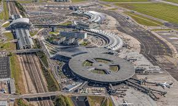

BIENVENUE SUR LE SITE DE IKRAM
Je vais vous partager mon voyage de Lyon à Sousse
Lister des choses à faire
- Verifier si les passeports sont à jour
- Se procurer le billet d'avion
- Acheter le nécessaire pour voyager
Activitées prévus en Tunisie
Visites
- Musées
- Restaurants
- Plages
Achats en Tunisie
- Courses quotidiennes
- Achats souvenirs
- Provisions
Je vous laisse découvrir l'image de l'Aéroport de Lyon
